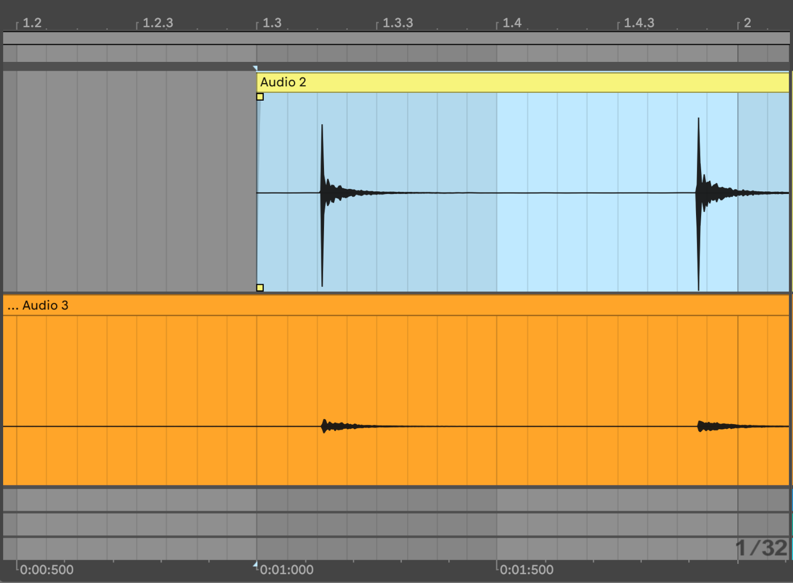
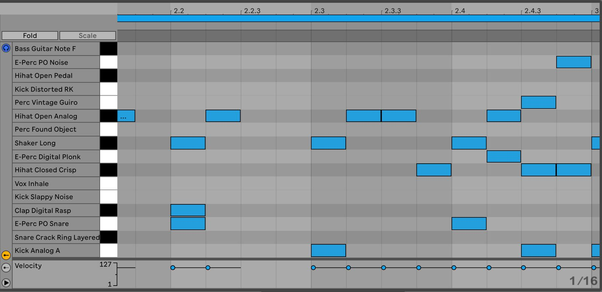

The Other Hegemony: Effects of software development culture on music software, and what we can do about it
Abstract
NIME has recently seen critique emerging around colonisation of music technology, and the need to decolonise digital audio workstations and music software. While commercial DAWs tend to sideline musical styles outside of western norms (and even many inside too), viewing this problem through an historical lens of imperialist legacies misses the influence of a more recent - and often invisible - hegemony that bears significant direct responsibility: The culture of technological development. In this paper we focus on the commercial technological development culture that produces these softwares, to better understand the more latent reasons why music production software ends up supporting some music practices while failing others. By using this lens we can more meaningfully separate the influence of historic cultural colonisation and music tech development culture, in order to better advocate for and implement meaningful change. We will discuss why the meaning of the term “decolonisation” should be carefully examined when addressing the limitations of DAWs, because while larger imperialist legacies continue to have significant impact on our understanding of culture, this can direct attention away from the techno-cultural subset of this hegemony that is actively engaged in making the decisions that shape the software we use. We discuss how the conventions of this techno-cultural hegemony shape the affordances of major DAWs (and thereby musical creativity). We also examine specific factors that impact decision making in developing and evolving typical music software alongside latent social structures, such as competing commercial demands, how standards are shaped, and the impact of those standards. Lastly, we suggest that, while we must continue to discuss the impact of imperialist legacies on the way we make music, understanding the techno-cultural subset of the colonial hegemony and its motives can create a space to advocate for conventions in music software that are more widely inclusive.
Author Keywords
Decolonisation, Digital Audio Workstation, Music development culture
CCS Concepts
•Applied computing → Arts and humanities → Sound and music computing;
Introduction
NIME has seen a growing call for reflection on the social impacts of our work[1][2][3], with emphasis now gathering on the colonial legacies of music technology[4][5]. This critique extends past NIME and to the commercial sector, particularly to digital audio workstations (DAWs). DAWs1 such as Ableton Live, Logic, FLStudio, and Reason have begun to attract critique on for their lack of native support for alternative tunings[6] and the implicit promotion of twelve tone equal temperament2 (ET), as well as the degree to which they enforce a rigid and grid-based version of 4time. Though music technologists may not see themselves as intentionally promoting colonist ideologies, the fact remains that the promotion and canonisation of Western classical music theory is part of our inherited colonialist and imperialist history.
However, using the term “decolonisation” as the context for this critique identifies a white European music hegemony as the root cause of the exclusion of expanded tonalities and rhythmic complexity. While a useful historical lens, this critique does not account for the fact that this reductive version of music theory excludes many Western music norms and European traditions—in fact, it is easier to identify the limited communities that major DAWS do support, rather than the ones they do not. By relying on an imperialist historical perspective to explain the propagation of music theory promoted by DAWs, we miss a much more latent, impactful and contemporary subset of musical hegemony: The techno-cultural context in which these softwares are made.
In this work we examine this techno-cultural hegemony that directly affects how electronic music software (EMS) is developed, how it shapes existing tools, how it affects musicians, and based on this perspective, suggest ways to advocate for change. First, we discuss how tools shape music, and how limited Western conventions gained prominence before DAWs emerged. Then, we trace the factors that affect how software is made, and how these factors enabled the adoption of a narrow vision of music based on Western pop ideals. Next we examine the reasons that these hegemonic habits continue and are reinforced. Finally, we list ways in which everyone can usefully critique the commercial music tech sector, and long-term strategies for meaningful change.
While this discussion focuses mainly on commercial dynamics, discussions on intentionality, non-neutrality, and the dominance of specific musical and technological perspectives within the EMS development community are directly applicable to NIME work, particularly that which claims to be targeted at a general audience or musician who has no experience developing technology. A commercial DAW is a mature example of a limited project started by one or two people, (like so much NIME work), and it is useful to see the effects of early decisions at a large scale. Most importantly, many within the NIME community will go on to become or teach the next generation of commercial music technology developers and critics, and by adhering to community ideals of outward perspectives and social engagement these discussions can shape those who will be in positions to influence decisions that affect music making more widely in the future.
Unpacking the context and critiques
EMS represents a powerful option for music creativity. In a recent Billboard article[7], producer Diplo discusses the enabling impact that Ableton Live had on his creative practice and those of his peers. He and !!! singer Nic Offer discuss Live on instrument terms, with Offer explaining that “I play Live”, and Diplo saying “I was good at the instrument”. As Detroit promoter Jason Huvaere puts it, software like Live, which comes with soft instruments, effects packs, and substantial sample libraries offers “access to a versatile tool that would do what people want without spending thousands and thousands of dollars [on gear] and training.”
EMS companies advertise their products as creatively open and musically neutral, but there is growing awareness of how the affordances and constraints of a music-making instrument or tool shape both the music created and the communities creating that music[8]. This is demonstrated through a link between promoted affordances[9], affordances and their real and imagined sonic outcomes[10], as well as the impact of musical genre and instrumental practice on musicians’ thinking and language[11]. In short: Our instruments shape how we understand what is possible.
Because instruments in turn shape music, Magnusson[8] considers it necessary to “acknowledge the theoretical, cultural and social context in which all tools are designed—and this implies an awareness by designers of the responsibilities they have in terms of aesthetic and cultural influence.” In this way, if a major commercial DAW offers clear support only for ET, this is an implicit continuation of ET’s hegemony as it forces creators who use non-equal temperaments to choose between either adopting ET, or lose out on everything else a DAW has to offer. Even worse, for musical newcomers learning a DAW as their primary instrument, it promotes a reductive view of music, and a narrow understanding of creative possibility.
The simplification of tone and rhythm
Pitch and rhythm are central musical concepts everywhere, awash with rich complexity, but in EMS they have been simplified significantly through equal temperament (ET) and a default grid-based 4 time.
Equal temperament’s rise to power
The origins of modern-day ET3 were based in a desire “for the scale to be tempered on keyboard instruments in such a way that most or all of the concords are made somewhat impure so that few will be left inordinately so.”[12] It avoided painful disharmony on pianos and fretted instruments unable to adjust intonation on-the-fly. As Barbour says, “the history of equal temperament then, is chiefly the history of its adoption upon keyboard instruments.”[13]
Though ET has been identified as being a ubiquitous force in “Western music” [14], outside of instruments with fixed tuning (such as piano, tuned percussion, or fretted guitars), it remains regularly disregarded or irrelevant even within Western classical music. ET is challenging for reliable aural tuning as human ears are more adept at identifying more resonant harmonic intervals. As critic Peter Kirn notes, “Having a scale that’s divided into 12 equal steps (equi-dodecatonic) is really an outlier, historically.”[15]
Even with the most prominent instruments in the Western tradition, ET is limited in its usefulness. It is common knowledge within professional orchestras that, unlike ET, a and an are not the same pitch. During symphonic performance, sustained chords are typically tuned more justly4. For the violin family, a pythagorean tuning5 [13] is particularly suited for open fifths, and it remains common practice for tuning within the violin family to be based on “ring tones”[16] (optimally resonant pitches), or to use expressive tuning involving contextually sharpening a note to heighten emotional resonance[17][18]. Similarly, Western wind and brass instruments naturally follow the overtone series, with modern adaptations, such as the Boehm system, used to enable tuning closer to a diatonic chromatic scale[19]. On-the-fly adjustments are accomplished through embouchure and fingerings for wind players, while brass players have a tuning slide. Outside of orchestras more tuning traditions can be found: those used by modern composers like Harry Partch and Lamont Young; the “old tonality”[20] of Nordic folk music; the famed diaphony[21] of Balkan singing; and specialised tuning for Scottish bagpipes[22]. The range of what is excluded by EMS supporting only ET is substantial when considering only Western performance contexts, and when we consider the dizzying array of musical traditions elsewhere—Arab makams, South East Asian gamelans, African xylophones, and many more6—it is easy to wonder exactly who this ET dominance is intended to serve.
Simplification of rhythm
Micro-timings and complex time signatures have faced a similar story of simplification as tuning with a straight 4 the well afforded default. Similarly, within Western musics, Western classical, folk forms such as Celtic and klezmer, and jazz—a genre that grew out of colonisation but with major uptake (and appropriation) within colonising nations—are all incredibly rich in micro-timings such as swing, and rhythmic irregularity, and dramatic intentional changes in tempo that are difficult, if not impossible to represent in popular EMS. Music worldwide presents an even richer picture, from the exciting complex polyrhythms of West Africa to the fluid timings of a Balinese kebyar.
The influence of pop music
The power of both ET and 4 timing have been cemented through Western pop music (a loose term we use to indicate music commonly heard on commercial radio, or in mainstream media such as popular television, movies and online content). Historically, pop music’s most central instruments are the guitar and the piano, both of which use ET, and Western rock and pop, through their dependence on ET tuned instruments, means that ET is central not only to musicians creating popular music, but audiences recognising what it sounds like. Additionally, popular music drove the popularity of the piano and the guitar for players, and since both use ET and learning them doesn’t require learning tuning as a musical skill, knowledge of tuning nuances became ever more niche.
With the emergence of Western pop, music rhythmic possibilities also narrowed; Western pop music is a rare example of a major genre with timing that is generally straight forward and 4. Again, because of the cultural traction of pop music, and the fact that making pop music doesn’t require complex time signatures and micro-timings, DAWs were programmed with this reductive notion of musical timing in mind, even though it meant losing a major element of musical and performative creativity.
This didn’t have to be the case. Digital instruments such as synthesizers did not have to adopt ET7 because the sounds they make are not dependent on a fixed length string but on programmed algorithms, and there is nothing about 4 that is particularly special or advantageous. Instead, the reason is a combination of ET and 4 being generally accepted and their alternatives deemphasised, along with the mathematical and design simplicity of one system of tuning and rhythm. In some ways, it’s understandable: tuning and rhythm are complicated topics. Why frustrate the design process with nuance, when people don’t need it to make pop music?
The other hegemony: Tech development culture
There’s no denial that DAWs affect the music made with them. It is widely acknowledged that strong associations exist between DAWs and specific musical genres (such as Ableton Live and techno[23] and FL Studio and hiphop[24]). Though DAWs implemented ET’s simplification of tonality and pop’s rhythmic simplicity without significant questioning (and exponentially reinforced these conventions through a meteoric rise in popularity as music-making tools), we do not claim this is because of malicious intent. Instead, it is a result of techno-cultural hegemony that is rooted in the way software is made, and those who make it.
Inertia
An important factor in the evolution of any DAW is inertia, a resistance to change due to existing state. Inertia occurs on two levels: the software, and community around it.
When developing commercial software, defaulting to existing norms happens for good reason: Software development is complex, and implementing accepted norms, particularly those that will serve a large enough paying audience, reduce the complexity of the task. But, design decisions taken at an early stage affect how the software is written for years to come, or at least until a significant and costly refactoring, and therefore these early decisions of which musical approaches to support cast a very long shadow.
Backwards compatibility is a standard example of code inertia (what’s written next has to be compatible with what came before), but reasons for inertia can be more latent. One example from ProTools LE: Despite introducing automatic delay compensation for its professional TDM hardware in 2004, legacy issues with how LE drivers were originally written meant that calculating automatic latency compensation was technically complex[25]. Despite automatic delay compensation being a consistently popular feature request, it was not until ProTools 9 in 2010 that Avid finally delivered that feature. ProTools 9 offered almost no new features outside a major change to support ASIO and Core Audio devices, which included a complete reworking of non-TDM drivers[26].
Inertia can also come from a user community. Communities may resist significant change for reasons unrelated to music, like the time required to learn new workflows. Further, a DAW’s first community will originate from the music culture that that software was initially designed to support, so even as a DAW’s user base grows, voices from that early community are likely to remain dominant due to their longevity, and they are impactful in steering the company’s focus to features most important to them. It is easier to make existing fans happy than to invest in a feature important to a quieter demographic, unless the company proactively seeks to expand its audience beyond the original demographic.
The people who develop the software
The people who originate software profoundly impact its direction. Interviews with the founders of three popular electronic music DAWs—Ableton Live, FLStudio, and Reason—reveal that all three were motivated by an interest in synthesizers, looping and sequencing[23][24][27]. None of the group identify as traditional musicians, with FLStudio’s creator Didier Dambin even claiming no knowledge of, or interest in music making[24]. While these DAWs have empowered many traditional musicians and enabled a movement of new, non-traditional music makers, this origin in synthesizers and sequencing means that these companies have a default orientation towards those original communities and music-making approaches.
A particular software’s developers also play a major role. Music software developers are primarily technologists, not musicians, which makes sense as a professional musician is unlikely to have the right skill set for programming highly complex software. But, in the authors’ experience8, music software companies are primarily filled with programmers who are music enthusiasts and often use the software they make. This cultural effect could be a result of EMS being a limited scale financial market; Focusrite, one of the biggest maker of audio interfaces, estimates the entire market at roughly $1.6 billion[28], meaning that even the largest EMS companies can not compete with sectors like fintech to attract programming talent on salary alone. Instead, EMS companies leverage their cultural capital to attract programmers who are also enthusiastic about music.
These music-makers-turned-developers can reinforce a narrow view of the future, especially if their collective music knowledge represents a reductive viewpoint. There is the danger of false confidence: As programmers and designers who are music enthusiasts we may think we already know about music and don’t need to look further into it, or, worse yet, we “know” our product and don’t need to look critically at what we enable. This does not mean music software companies are not doing external user and customer research (though even that research, if done without a critical viewpoint, is most likely going to be shaped by who is asked, shouts confidently, and is heard), but rather that usually no one is explicitly tasked with representing the interests of unsupported musical forms. With high cultural homogeneity and a lack of music theorists, pedagogues, and ethnomusicologists tasked with advocating within for a broader musical view point, approaches are likely to default to keeping up with competitors from the same hegemony, and/or what is simplest to understand, and/or as what is easiest (and therefore cheapest) to program.
Further, musician-developers have a tendency to not recognise barriers that technical solutions for musical tasks can present. For example, Ableton Live has long afforded non-ET tunings through integration with Max For Live, which enables custom programming and mapping of tuning. While implementing such a solution might be relatively easy for most music technologists, it is well beyond the technical knowledge level of a musician who is not also a technologist, thereby making it a non-affordance for them (at least without extensive study or hiring someone). Even as music technologists, how often do we default to using ET tuning if using Max For Live because even though we can, implementing another tuning is non-trivial extra work? Though a persistent challenge, ease-of-use in commercial software is often superior to niche or open source projects, as it is only with ease-of-use that commercial products develop a large profitable user base9. For many music makers, a technical solution that remains technical is not a solution.
Design complexity
There is an innate challenge to designing software that presents musical concepts in a way that not only enables complex creative music making, but also does so in a way that is neither overly technical nor privileging of one musical practice over others.
A primary source of complexity is the range of musicians to support, as well as their needs and approaches. Even a DAW oriented to electronic music has to deal with a multi-dimensional space of experience that users bring with them (see Figure 1), ranging from technical novices to software experts, as well as those who have never performed or made music to professional touring musicians. On top of that, musicians may have a vast range of end goals and operate according to the conventions of a huge range of genres, from sound design for a contemporary classical album to performing minimalist Berlin techno.

Figure 1: A simplistic representation of the user space places musical experience on an x-axis, with DAW experience on a y-axis. Users of DAWs have various contextual backgrounds that affect their individual needs and expectations that may compete against each other in design.
A second source of design complexity is that developing complex software takes time, and in the commercial world, time equals money. There will always be pressure, even within academia or non-commercial projects, to opt for simpler solutions. Part of what has made ET so enduring in EMS is that it is makes the subject of tuning so simple, whereas the concept of tonality is so broad. ET can be computed using a single formula, is reasonably harmonious in all keys, and importantly, is already familiar (at least to Western-attuned ears). These factors make it easy to be convinced that natively supporting only ET is sufficient and there is no need to look no further, even though it may be creatively reductive and actively makes the software unsuitable for some musical practices.
Impacts on music and culture
To examine impacts of inertia on music and culture, we can examine a theoretical design example related to designing rhythmic representation within a DAW.
To start, though there are some unmetered musical traditions (for example Japanese Gagaku[29] and Celtic solo vocal music), the majority of musical forms are metered, which is convenient because EMS depends on a computer system that needs to understand time. While we could develop a custom approach that learns the contextual clues that inform musical progression within a form without strict meter, that is programmatically far more complex than designing the software around a metered system of music which will serve a majority of musical practices. Though sensible, this decision excludes those who practice unmetered music.
Now we need to decide how to represent our metric structure. Western notation is fairly common world-wide due to its hegemonic position, which means that most people who have read notated music will recognise Western fractional notation (for example, 4) as a time signature and understand the accompanying beat structures. Practices using Western time signatures also afford a high degree of musical complexity so using it is a logical design choice. Though we’ve given privilege to a culturally hegemonic form, we are utilising its widespread familiarity to resonate with many musician’s existing expertise and its ability to accommodate many, though not necessarily all, non-Western forms.
Having opted to use a Western time signature, HCI tells us to design common repetitive tasks to be efficient—though HCI values are often incompatible with the needs of music software, HCI provides frameworks compatible with software generally[30]. For example, if 80% of the music made by users of the software is in 4, design for efficiency means our DAW should default to 4, even though this means 20% of users will have to reconfigure the time signature each time, assuming they can even represent the meter in which they want to work. So far our theoretical DAW (and yes, we have just decided on the same behaviour seen in professional DAWs) has only accounted for musicians who perform metered music and recognise Western time signatures. How does the aurally trained musician who does not read music realise the default is not right for them, and how to fix it? What about someone who has never even thought about what it is for music to have meter? The default meter supports quick progression to being able to enjoy making music but without intrinsic curiosity it may never occur to them that anything else is even possible, and that their creative vision has been restricted to a 4 only version of music—not by force, but simply because no other options appear available. This potential for inadvertently-learned creative limitation implies that makers of EMS who are genuinely committed to musical diversity have a responsibility to all musicians to foster that curiosity.
Of course, with potentially millions of users in a huge range of styles and genres, EMS will always need to make compromises. Making all creative options equally and quickly available makes software overwhelming and difficult to learn[31]. Even software designed to address some of these hegemonic limitations has its own limitations; Khyam Allami’s Leimma software[32], designed to promote exploration of non-ET tunings, uses ET as a commonly understood reference standard. We are not suggesting we should give up, but rather that we should meet this challenge by actively seeking design that allows broader musical possibilities and to do so in a way that is effective for music makers, instead of adopting norms in order to reduce complexity.
The challenge of visualisation
In any EMS, music has to be represented visually on a screen, meaning all DAWs privilege visual information over aural to some degree10. The clearest impact of how simplifying this complex task of visual modality impacts aural outcomes is in the grid.
“The grid” (Figure 2) refers to the representation of strict metric timing and where regular beats should go, and is a practical means for visualising time in music. Even if a user turns off a DAWs quantisation (or snapping) to be less restricted to the grid, its very appearance can trigger a desire for musical events to follow visually aesthetically pleasing forms, despite those forms having no basis in sound (Figure 3).


Figure 2: Example of the grid in when working with an audio file. [Taken from Ableton Live 11]


Figure 3: Example of the grid in when working with MIDI notes. Notice how perfectly aligned all notes are to the grid. [Taken from Ableton Live 11]
The effects of the grid are even more noticeable when creating virtual synthesizer parts. Human music performance is littered with expressive intentional micro-timings and micro-tunings, and quantising musical events to a grid pushes musicians towards a particularly mechanistic version of musical timing and pitch. Live’s Groove Pool11 is an attempt to address mechanistic timing, but it does not solve the privileging of rhythmic regularity promoted by the grid, or the potential impact of the grid on a musician’s mental models.
The grid is also limited in its ability to support expressive timing. Even though a Western-notated score may appear similarly linear, there is a tremendous amount of context that musicians draw on when they interpret the score, including where time should be taken, where things slow down and how. All of this comes from the musician knowing the rules and conventions of a particular genre or vernacular, but there is no affordance for this in a DAW, likely because it is simpler to design for a system with strict timings, and these expressive variations of tempo are not common in pop music. Of course, finding a way to capture and document such learned musical contexts is extremely challenging, but it’s worth software companies asking what they are losing by not doing so.
The impact of standards
Another factor that imparts significant inertia is standards and their implementation. The prime example is Musical Instrument Digital Interface (MIDI). The MIDI standard, first proposed in 1981, started as a hardware and file standard for communicating between keyboards, synthesizers, and various electronic instruments, and is now widely used by DAWs, instruments and audio plug-ins[33]. Devised at a time when data transfer rates were limited and designed primarily around (piano) keyboard control, MIDI communicates using channels, one channel per instrument. Instruments react to discrete note-ons (including note name and velocity) and note-offs received through the assigned channel. Continuous controllers are optionally supported on a per-channel basis. Examples of commonly supported parameters are volume, sustain pedal, modulation wheel, and pan.
While MIDI has been extremely successful, it is not without flaws. One issue is that, as implemented (not written), MIDI tends to reduce instruments to a note-on/note-off, keyboard-centric ET definition that is not appropriate for non-percussive instruments. For instance, for a clarinet there is no clear way to express attack quality (including whether it has a distinct note-on), and volume on a clarinet is often shaped throughout a note. The MIDI standard does include an optional breath control parameter, but a synthesizer may use that parameter not for breath control, but rather map it to aftertouch—a keyboard-centric concept. Similarly, with one instrument per channel, parameters like pitch bend can only be applied per-instrument, not per-note, effectively preventing a DAW from being able to retune a polyphonic instrument to support alternative tunings.
The flexibility of the standard successfully supports specific pairings of interface-to-audio device. However, if having to support a broad selection of interfaces and audio devices (as DAWs must), EMS developers can only rely on the mandatory or most commonly-implemented features. A MIDI tuning system (MTS) was added in 1992, but being optional, it has been sparsely implemented. Unfortunately, a standard is only as useful as its level of adoption: If a musician is using MIDI to generate music using multiple plug-in instruments and only one of their devices supports alternative tuning systems, it’s not a very useful standard.
The 2018 expansion to the MIDI standard with MIDI Polyphonic Expression (MPE)[34], prompted by newer and more expressive interfaces, represents a major breakthrough.12 Better yet, in contrast to MTS it has seen broad uptake. MPE assigns a channel per note (or voice), enabling per-note control signals including per-note pitch changing. The adoption of MPE has already seen Bitwig (Micro-pitch)[35] and Ableton (Microtuner)[36] release device-specific tools for supporting tunings outside ET. Perhaps with a widely implemented standard that can support deviations from ET, we will continue to see better-afforded means for creating music using diverse tuning systems.
Making a change: Working outward
For those of you reading as musicians and critics, hopefully we have highlighted how designing electronic music software that works for everyone is complicated; there is usually a much bigger story behind why something important to you may or may not be supported. And for those of us designing music technology for others, we can still do better. All of us can still discover our own internal biases and recognise how hegemonic forces are shaping our creative musical and technological outcomes.
The first step toward enacting change is becoming attuned to these hegemonic impulses. The inertial pressures working against more inclusive and creative design are real. Musicians and technologists being aware of these is a first step in advocating for change. Every musician and music technologist can do this by challenging their existing perspective. Take some time out, even just a few hours, to immerse yourself in learning about the sounds and performance practices in a musical genre or culture radically different from your own. Then, consider how the choices in your own work are influenced by inertial and hegemonic forces, and how you may unconsciously align with these perspectives by prioritising one musical practice over another. Try and design just one thing, even a design fiction, with inclusivity and equality in mind. Having challenged yourself and designed one thing for inclusivity, share it. Demonstrate that it’s possible, and inspire others to think too.
Then, move wider. Find where you have direct influence on musically creative outcomes, whether that being shaping industry standards, critiquing emergent DMIs, shaping commercial software, or shaping minds. Reach out, listen to, and consider relevant perspectives from practices outside your own niche. Critically consider not just who and what you are designing but for whom, and what you want to design or argue against. If you are doing research involving participants, be intentionally conscious of the range of experiences and biases that each participant brings to what you are trying to learn, as well as the ones you carry yourself. Be conscious of the impact of the voices you might be missing.
Zooming out even further, we can all challenge the places where music tech is made—whether in companies, cultural institutions or universities—and hold their leadership accountable. For example, music hardware manufacturer Focusrite’s 2021 annual report[28] says that they create positive change by “engaging with local and industry-wide communities to enable positive change” and that “our mission is to create an equitable culture, internally and externally, where all people feel they are welcome, safe, and positively represented”. Many other music software companies, academic institutions, and conferences (including NIME) publish similar statements. If you do not feel they are doing enough to combat the forces of techno-cultural hegemony in their own projects, use your wider perspective to tell them why.
Most importantly, we all must remember that the techno-cultural hegemony has achieved its current inertia because this inertia has so far been profitable. This is where this current hegemony differs from the historical forces: Companies care about the profit they make and academics care about the citations they get today. Put your (theoretical) money towards organisations that are actively confronting these problems and producing results; of course real change takes more than one version cycle, but critically assess what EMS developers are making, and most importantly, the problems they are prioritising and features they are releasing, as this is a clear indication of the kind of problems they truly care about.
Ultimately, designing for wider creative inclusivity benefits everyone. While it may take time to understand how EMS and DAWs can usefully support non-ET tunings and complex meter systems, we must consider all the creative potential for new results that can come from existing DAW-based musicians discovering new tonality and rhythmic worlds. By advocating for the creative needs of more musicians, you can help make a better product for your existing community.
Focusrite’s report includes: “As a leading audio technology company, we take on the challenge to ensure we are creating solutions for the present as well as what creative minds will need in the future.” One element in this mission is conspicuous by its absence: The acknowledgement that their products aren’t just enabling creativity, but are also shaping musical outcomes by deciding what they will make musically possible.
Technology is not neutral. Make your design decisions responsibly.
Acknowledgments
The authors extend their thanks to David Pocknee, Tillman Richter, Mike Verdone, Mark Abrams, Tamar Osbourne, and Chris Peck for their generous insights, advice, conversations, and feedback on these topics.
Ethics Statement
This paper addresses theoretical issues related to cultural inclusion within electronic music software. The views expressed in this paper are those of the authors. The authors are employed by Ableton AG, one of the main developers of electronic music software discussed within this paper. This paper was written at the authors own volition and with Ableton’s consent but is not endorsed by Ableton and does not represent the views of Ableton AG. As this paper required no experimentation or user study, there are no further ethical concerns.
Footnotes
We consider DAWs to be a subset of electronic music software. There are generally two overlapping classes of DAWs; DAWs like ProTools and Reaper that were initially designed primarily for recording, editing, and mixing acoustic audio, and electronic music software like FLStudio and Reason originally designed as sequencers and synth modules. While the later class has earned the DAW classification through expansions to support audio editing, the former also generally support tools for electronic music making.
↩Twelve tone temperament (also known as 12TET) is the equal division of the octave into twelve notes. This means the ratio of the frequencies of any adjacent pair of notes is the same.
↩Equal temperament, including 12 tone ET, is not an exclusively Western concept. There is evidence of 12 tone ET systems in early East Asian music and Greek theory. Even today, slendro, a version of 5 tone equal temperament, is regularly used in Indonesian music.
↩Just intonation attempts to tune all musical intervals as whole number ratios (such as 3:2 or 4:3) to achieve maximum resonance.
↩Pythagorian tuning uses frequency ratios where all intervals are based on the ratio 3:2, also known as the "pure" perfect fifth. It is one of the most consonant and easiest to tune by ear.
↩This paper focuses more heavily on Western than non-Western forms, not to privilege their importance over music from other parts of the world, but to fight against the misnomer that ET and rhythmic simplicity are defining factors of Western musics.
↩We are speaking as about synthesizers as a class. Some individual synthesizers do support alternative tuning but many are ET only, or only allow changing the reference pitch (such tuning A to 442Hz instead of 440Hz).
↩The first author has experience as a software engineer for Avid (ProTools) and Ableton (Live), and as an academic. The second author has experience as a researcher for Ableton (Live), as a founding developer of Bela, and as an academic.
↩We are speaking here in general terms. We recognise that there are some niche and open source softwares with excellent non-technical ease-of-use. We also recognise that there are specific design cases where a technical solution to a creative problem is acceptable, if not desirable.
↩We recognise that those with visual impairments experience DAWs differently, however even for them, they are navigating a software designed first for sighted users and are thus forced to generally work within sighted paradigms.
↩Groove Pool is a tool within Ableton Live that can be set to apply rhythm variation to mechanised beats, thereby making them feel less automated. More here: https://www.ableton.com/en/manual/using-grooves/
↩For bespoke projects it has long been possible to use Open Sound Control (OSC) for polyphonic control. OSC is generally easy to use and extremely flexible through passing user defined control signals. While this flexibility powerfully allows it to support any creative use case, the fact that it does not have standardized messages and is not plug-and-play means it does not generalize well and remains somewhat niche.
↩
Citations
- ↩Morreale, F., Bin, S. A., McPherson, A., Stapleton, P., & Wanderley, M. (2020). A NIME of the times: developing an outward-looking political agenda for this community. Proceedings of the International Conference on New Interfaces for Musical Expression, 160–165.
- ↩Masu, R., Melbye, A. P., Sullivan, J., & Jensenius, A. R. (2021). NIME and the environment: toward a more sustainable NIME practice. Proceedings of the International Conference on New Interfaces for Musical Expression.
- ↩Hayes, L., & Marquez-Borbon, A. (2020). Addressing NIME’s Prevailing Sociotechnical, Political, and Epistemological Exigencies. Computer Music Journal, 44(2–3), 24–38.
- ↩Tragtenberg, J., Albuquerque, G., & Calegario, F. (2021, April 29). Gambiarra and Techno-Vernacular Creativity in NIME Research. NIME 2021. https://doi.org/10.21428/92fbeb44.98354a15
- ↩Cadavid, L. P. (2020). Knotting the memory//Encoding the Khipu_: Reuse of an ancient Andean device as a NIME . In R. Michon & F. Schroeder (Eds.), Proceedings of the International Conference on New Interfaces for Musical Expression (pp. 495–498). Birmingham City University. https://doi.org/10.5281/zenodo.4813495
- ↩Faber, T. (2021). Decolonising Electonic Music Starts With its Software. In Pitchfork. https://pitchfork.com/thepitch/decolonizing-electronic-music-starts-with-its-software/
- ↩Knopper, S. (2021). Inside Ableton, the Music Software Company Everyone Wants to Buy. In Billboard. https://www.billboard.com/pro/ableton-founder-gerhard-behles-2021-interview/
- ↩Magnusson, T. (2009). Of epistemic tools: Musical instruments as cognitive extensions. Organised Sound, 14(2), 168–176.
- ↩McPherson, A., Lepri, G., & others. (2020). Beholden to our tools: negotiating with technology while sketching digital instruments. Proc. NIME.
- ↩Pigrem, J., & McPherson, A. P. (2018). Do We Speak Sensor? Cultural Constraints of Embodied Interaction. Proc. NIME, 382–385.
- ↩Lepri, G., McPherson, A., & others. (2019). Fictional instruments, real values: discovering musical backgrounds with non-functional prototypes. Proc. NIME.
- ↩Magnusson, T. (2009). Of epistemic tools: Musical instruments as cognitive extensions. Organised Sound, 14(2), 168–176.
- ↩Lawson, C., & Stowell, R. (1999). The historical performance of music: an introduction (p. 87). Cambridge University Press.
- ↩Barbour, J. M. (2004). Tuning and temperament: A historical survey. Courier Corporation.
- ↩Faber, T. (2021). Decolonising Electonic Music Starts With its Software. In Pitchfork. https://pitchfork.com/thepitch/decolonizing-electronic-music-starts-with-its-software/
- ↩Kirn, P. (2020). Explore tuning: Bitwig, VCV Rack, reading, and why it matters. Create Digital Music. https://cdm.link/2020/07/explore-tuning-bitwig-vcv-rack-reading-and-why-it-matters/
- ↩Barbour, J. M. (2004). Tuning and temperament: A historical survey. Courier Corporation.
- ↩Kreitman, E. (1998). Teaching from the balance point: A guide for Suzuki parents, teachers, and students. Western Springs School of Talent Education.
- ↩Duffin, R. W., & others. (2007). How equal temperament ruined harmony (and why you should care). WW Norton & Company.
- ↩Kanno, M. (2003). Thoughts on how to play in tune: Pitch and intonation. Contemporary Music Review, 22(1–2), 35–52.
- ↩Boehm, T., Boehm, T., & Miller, D. C. (2011). The flute and flute playing. Courier Corporation.
- ↩Knudsen, R. (2019). Arranging traditional Norwegian Hardanger fiddle tunes. Ón gCos Go Cluas.
- ↩Manuel, P. (1989). Modal harmony in Andalusian, Eastern European, and Turkish syncretic musics. Yearbook for Traditional Music, 21, 70–94.
- ↩McKerrell, S. (2011). Sound performing: sound aesthetics among competitive pipers. International Review of the Aesthetics and Sociology of Music, 165–187.
- ↩Knopper, S. (2021). Inside Ableton, the Music Software Company Everyone Wants to Buy. Billboard. https://www.billboard.com/pro/ableton-founder-gerhard-behles-2021-interview/
- ↩Ong, D. (2019). “Fruity Loops was not designed for musicians”: Didier Dambin. Music Tech. https://musictech.com/news/gear/fruityloops-was-not-designed-for-musicians-didier-dambin/
- ↩DeMercurio, D. (n.d.). Latency and Delay Compensation with Host-Based Pro Tools Systems. http://akmedia.digidesign.com/support/docs/Delay_Comp_PT_Host_Systems_33000.pdf
- ↩Inglis, S. (2011). Avid ProTools 9. Sound On Sound. https://www.soundonsound.com/reviews/avid-pro-tools-9
- ↩Knopper, S. (2021). Inside Ableton, the Music Software Company Everyone Wants to Buy. Billboard. https://www.billboard.com/pro/ableton-founder-gerhard-behles-2021-interview/
- ↩Ong, D. (2019). “Fruity Loops was not designed for musicians”: Didier Dambin. Music Tech. https://musictech.com/news/gear/fruityloops-was-not-designed-for-musicians-didier-dambin/
- ↩In Search of Reason - An Interview with Propellerhead’s Ernst Nathorst-Böös. (2014). In kvrAudio.com. https://www.kvraudio.com/interviews/in-search-of-reason---an-interview-with-propellerheads-ernst-nathorst-b-s-25935
- ↩Ong, D. (2019). “Fruity Loops was not designed for musicians”: Didier Dambin. Music Tech. https://musictech.com/news/gear/fruityloops-was-not-designed-for-musicians-didier-dambin/
- ↩Annual Report + Accounts 2021. (2021). Focusrite Plc. https://focusriteplc.com/sites/plc/files/documents/Annual%20Report%20for%20the%20Year%20Ended%2031%20August%202021.pdf
- ↩Nelson, S. G. (2017). Court and religious music (2): music of gagaku and shōmyō. Routledge.
- ↩Bin, S. A. (2018). The Show Must Go Wrong: Towards an understanding of audience perception of error in digital musical instrument performance.
- ↩Pardue, L. S., McPherson, A., & Overholt, D. (2018). Improving the instrumental learning experience through complexity management. Proc. SMC.
- ↩Allami, K. (2021). Leimma Tutorial by Khyam Allami. CTM. https://isartum.net/leimma
- ↩(N.d.). The MIDI Association. https://www.midi.org/midi-articles/midi-history-chapter-6-midi-is-born-1980-1983
- ↩MIDI Polyphonic Expression (MPE) Specification Adopted! (28, Jan, 2018). The Midi Association. https://www.midi.org/articles/midi-polyphonic-expression-mpe
- ↩(26, Nov., 2019). Audio Technology. https://www.audiotechnology.com/news/bitwig-studio-3-1-announced
- ↩Sorel, C. (4, Apr, 2022). Ableton Live’s New Microtuner Helps Musicians Escape the Ordinary. LifeWire. https://www.lifewire.com/ableton-lives-new-microtuner-helps-musicians-escape-the-ordinary-5224722
- ↩Annual Report + Accounts 2021. (2021). Focusrite Plc. https://focusriteplc.com/sites/plc/files/documents/Annual%20Report%20for%20the%20Year%20Ended%2031%20August%202021.pdf